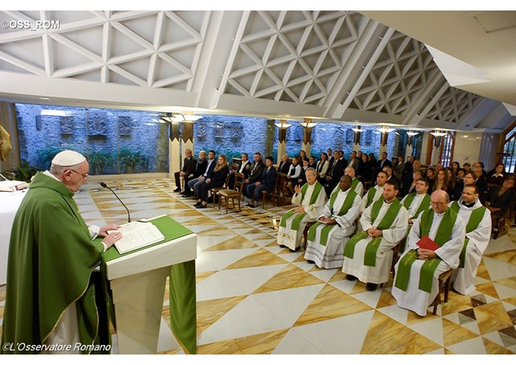

教宗清晨弥撒：贪恋钱财的神父和主教使我感到难过
06/11/2015 19:08 梵蒂冈广播电台
（梵蒂冈电台讯）教宗方济各11月6日在圣玛尔大之家的清晨弥撒中表示，主教和司铎要克胜“双重生活”的诱惑，教会蒙召做仆役，而非“生意人”。教宗还告诫道，要警惕“贪恋钱财的趋炎附势者”，因为他们对教会的危害极大。
教宗方济各的弥撒讲道围绕当天礼仪所呈现的两种仆役形象——服事和受服事。首先是圣保禄宗徒的形象，圣保禄“为了服事而舍弃了一切”，最後在罗马“被他的几个弟子出卖”而被判处死刑。这位外邦人使徒的伟大从何而来？从耶稣基督而来，“他以服事、被拣选、拥有圣神的力量为荣”。
教宗说，圣保禄是服事的仆役，“他通过奠定基础，即宣讲耶稣基督来服事”，“他从来没有为了争取某个地位、某种权威或受服事而停下来。因此，他是一名仆役，服事而非受服事的仆役”。
教宗说：“我告诉你们，在清晨弥撒中如果有些神父告诉我：‘啊！神父，我回来是为了看望我的亲人，因为我已经在亚马孙传教40年了’；或者一位修女对我说：‘而我呢，已经在非洲医院工作了30年’；或者当我遇到一位始终面带微笑、在医院为残疾人服务长达30或40年的修女时，我会多麽地喜悦和感动。这就叫服事，这就是教会的喜悦：永远在进步；向前迈进，舍弃性命。圣保禄就是这样做的：服事”。
教宗继续说，在福音中主耶稣也让我们看到另一种仆役形象，这种仆役“非但不服事他人，反而要他人服事自己”。我们已经看到，他“为了保住自己的位置，是多麽的狡猾”。
教宗说：“在教会内也有这种不服事、不为他人着想、不奠定基础、不为教会服务的人；他们趋炎附势，贪恋钱财。我们见过太多这样的司铎和主教了。说起来实在令人难过，不是吗？福音的本质和耶稣基督所要求的，是服事，做服事的人，不止步，始终向前迈进，具有忘我精神”。而不是当自己获得某个地位後，就虚伪地在安逸中度日，像耶稣所说的法利塞人那样，为了让他人看见而在广场上走来走去”。
这是两个图像，两种基督徒形象，两种神父形象，两种修女形象。耶稣藉着圣保禄让我们看到“从不止步、始终前行，为我们指明道路”的教会形象。“相反地，教会如果不冷不热，自我封闭，常常唯利是图，就不是一个服事的教会、提供服务的教会，而是一个要人服事的教会”。
教宗最後说：“愿上主将祂赐予圣保禄的恩宠赐予我们”，让我们以不断进步、放弃自身安逸为荣；“求主也救我们脱免双重生活的诱惑”，不要让自己看起来像个服事的仆役，实际上却要人服事。